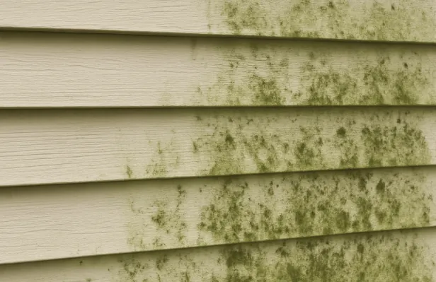
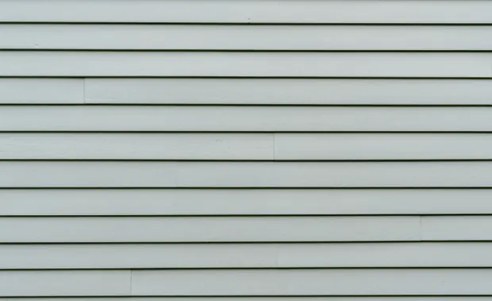

Before jumping into the repair versus replacement debate, it’s important to understand what siding is and what it does. Siding acts as a protective barrier for your home, safeguarding it from weather conditions like rain, snow, and wind. It also contributes to your home’s energy efficiency by providing insulation. The insulation provided by siding not only helps maintain a comfortable indoor temperature but also reduces energy consumption, leading to lower utility bills.
Common materials used for siding include vinyl, wood, fiber cement, and aluminum. Each material has its own advantages and disadvantages, and the type of siding you have can influence whether you should repair or replace it. Understanding these characteristics can guide you in making the best decision for your home.
Signs Your Siding Needs Attention
Visible Damage and Wear
One of the first indicators that your siding needs attention is visible damage. This might include cracks, holes, or warping. Such damage can compromise the protective function of your siding and needs to be addressed promptly. Ignoring these issues can lead to further deterioration, potentially exposing your home to water damage or pest infestations.
Increased Energy Bills
If you notice an unexpected spike in your energy bills, your siding might be to blame. Damaged siding can lead to drafts, making your heating or cooling systems work harder to maintain the desired temperature. Inadequate insulation from old or damaged siding can allow heat to escape during winter and let in hot air during summer, leading to increased energy consumption.
Conducting an energy audit can help identify if your siding is the culprit. Sealing gaps and repairing damaged sections can improve insulation and result in noticeable savings on your energy bills. If repairs don’t suffice, it might be time to consider replacing your siding with more energy-efficient materials.
Mold and Mildew

The presence of mold or mildew on your siding can be more than just an aesthetic issue. It often indicates moisture problems that could affect the structural integrity of your home. Mold and mildew need to be addressed quickly to prevent further damage. Left unchecked, these fungi can spread, causing health issues for occupants and potentially damaging the underlying structure of your home.
Regular cleaning and maintenance can help prevent mold and mildew growth. However, if you notice persistent mold or mildew, it may be a sign of a more serious issue with your siding or the home’s moisture barrier.
When to Consider Siding Repair
Minor Damage
For minor issues such as small cracks or localized damage, siding repair is often a viable option. Repairing these issues can extend the life of your siding without the need for a full replacement. Small repairs can often be completed quickly and at a lower cost, making them an attractive option for budget-conscious homeowners.
It’s important to address minor damage promptly to prevent it from escalating into more serious problems. Regular maintenance and timely repairs can help preserve the integrity of your siding, ensuring it continues to protect your home effectively.
Budget Constraints
If you’re working with a limited budget, siding repair can be a cost-effective solution. It allows you to address the most pressing issues without the expense of a full replacement. Repairing siding can also be an opportunity to prioritize which areas need the most attention, allowing you to allocate resources effectively.
Maintaining Original Siding
In some cases, homeowners may want to preserve the original siding, especially if it adds historical value to the property. Repairing can be a way to maintain authenticity while addressing any damage. Preserving original siding can also help retain the home’s character and charm, which might be important for those living in historic neighborhoods.
When to Opt for Siding Replacement
Extensive Damage
If a large portion of your siding is damaged or if the damage is severe, replacement is often the better choice. Extensive repairs can be nearly as costly as replacement, without the long-term benefits. Replacing your siding can provide a fresh start, eliminating all existing problems and ensuring a uniform appearance across your home’s exterior.
Outdated or Inefficient Siding
Older siding materials may not offer the same level of insulation as newer options. Upgrading to more efficient siding can improve your home’s energy efficiency and reduce utility bills. Modern siding materials are often designed with energy efficiency in mind, providing better insulation and helping to lower heating and cooling costs.
Enhancing Curb Appeal
If you’re planning to sell your home or if you simply want to update its look, replacing your siding can give your home a fresh appearance. New siding can significantly boost curb appeal, potentially increasing your home’s market value. A well-maintained exterior can make a strong first impression on potential buyers, setting your home apart in a competitive market.
Cost Considerations

Repair Costs
Siding repair costs vary depending on the extent of the damage and the material used. On average, homeowners might spend a few hundred dollars on minor repairs. However, costs can increase if the damage is widespread or if specialized materials are required. It’s important to get multiple quotes from contractors to ensure you’re getting the best price for the necessary repairs.
Replacement Costs
Siding replacement is a more substantial investment. The cost will depend on the size of your home, the siding material, and labor. On average, replacing siding can range from several thousand dollars to over ten thousand, depending on these factors. While the upfront cost may be higher, replacement can offer long-term savings through improved energy efficiency and reduced maintenance needs.
Making the Decision
When deciding between siding repair and replacement, consider the following:
- Extent of Damage: Is the damage minor and localized, or is it widespread?
- Budget: What are your financial constraints? Can you afford a full replacement, or is a repair more feasible?
- Long-Term Goals: Are you planning to stay in your home for a long time, or are you preparing to sell?
- Energy Efficiency: Could new siding reduce your energy bills and improve your home’s insulation?
Conclusion
Deciding to repair or replace your siding is an important choice that impacts your home’s appearance, protection, and energy efficiency. By carefully evaluating the extent of damage, your budget, and long-term goals, you can make the best decision for your home.
Taking action quickly helps prevent further damage and preserves your home’s value. Siding is an investment in your home’s future, and making the right choice provides lasting peace of mind. Contact our team at EZ Roofing today. We’re here to provide expert guidance and quality siding services to protect and enhance your home.